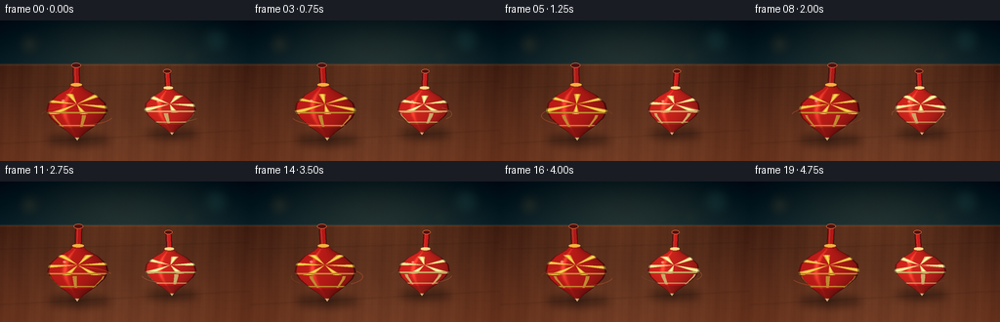
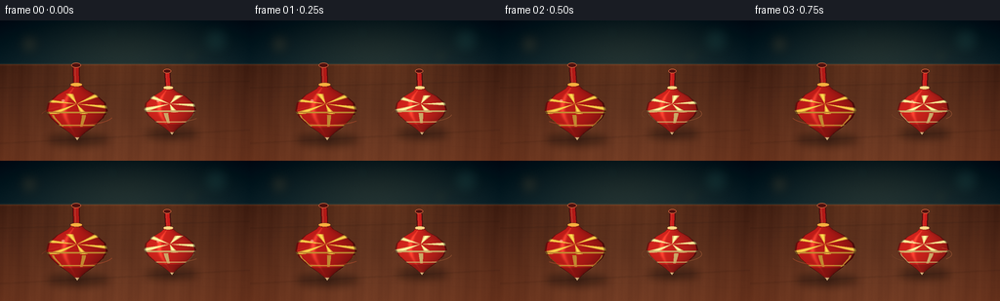

CODING AGENTS AS PIXEL WORLD MODELS
traex/GPT-5.6-Sol · instance_preservation_0039
点击播放 · 原生 RGB 像素
逐轮保存的候选
回放视频、检查图与代码变化。
每份候选均可单独播放。实际图片检查记录在下方工具轨迹中。
候选 01播放与检查图
点击播放 · 原生 RGB 像素


展开代码变化
--- 上一保存版本
+++ 本次保存版本
@@ -0,0 +1,244 @@
+from pathlib import Path
+import math
+import numpy as np
+from PIL import Image, ImageDraw, ImageFilter
+import artifact_io
+
+# Deterministic procedural rendering. The scene is rendered at 3x resolution
+# and downsampled for smooth, photographic-looking edges.
+W, H, N, FPS = 256, 144, 20, 4.0
+SS = 3
+RW, RH = W * SS, H * SS
+rng = np.random.default_rng(3901)
+
+
+def make_background():
+ yy, xx = np.mgrid[0:RH, 0:RW]
+ x = xx / SS
+ y = yy / SS
+ rgb = np.zeros((RH, RW, 3), dtype=np.float32)
+
+ # Deep teal studio wall with a soft warm glow behind the toys.
+ wall = y < 45
+ t = np.clip(y / 45.0, 0, 1)
+ rgb[..., 0] = 9 + 9 * t
+ rgb[..., 1] = 25 + 14 * t
+ rgb[..., 2] = 31 + 15 * t
+ glow = np.exp(-(((x - 130) / 92) ** 2 + ((y - 34) / 35) ** 2))
+ rgb[..., 0] += wall * 18 * glow
+ rgb[..., 1] += wall * 14 * glow
+ rgb[..., 2] += wall * 7 * glow
+
+ # Walnut tabletop with directional lighting and fine fixed grain.
+ table = ~wall
+ depth = np.clip((y - 43) / 101, 0, 1)
+ rgb[..., 0] = np.where(table, 70 + 47 * depth + 25 * glow, rgb[..., 0])
+ rgb[..., 1] = np.where(table, 38 + 27 * depth + 14 * glow, rgb[..., 1])
+ rgb[..., 2] = np.where(table, 24 + 17 * depth + 7 * glow, rgb[..., 2])
+ grain = (2.7 * np.sin(x * .22 + 0.5 * np.sin(y * .09)) +
+ 1.4 * np.sin(x * .71 + y * .035) +
+ 0.7 * np.sin(x * 1.9))
+ rgb += table[..., None] * grain[..., None] * np.array([1.0, .68, .42])
+
+ # Gentle vignette and a narrow highlight along the back edge of the table.
+ vig = np.clip(((x - 128) / 165) ** 2 + ((y - 78) / 120) ** 2, 0, 1)
+ rgb -= vig[..., None] * np.array([20, 17, 13])
+ edge = np.exp(-((y - 45) / 1.1) ** 2)
+ rgb += edge[..., None] * np.array([22, 14, 7])
+ rgb += rng.normal(0, .8, (RH, RW, 1))
+ bg = Image.fromarray(np.uint8(np.clip(rgb, 0, 255)), 'RGB')
+
+ # Out-of-focus background light disks; deliberately few and subdued.
+ bokeh = Image.new('RGBA', (RW, RH), (0, 0, 0, 0))
+ bd = ImageDraw.Draw(bokeh, 'RGBA')
+ for cx, cy, rad, col in [
+ (30, 24, 10, (255, 178, 92, 32)),
+ (221, 20, 14, (88, 190, 172, 25)),
+ (195, 37, 7, (255, 205, 118, 19)),
+ (115, 13, 6, (92, 191, 178, 18)),
+ ]:
+ box = tuple(int(v * SS) for v in (cx-rad, cy-rad, cx+rad, cy+rad))
+ bd.ellipse(box, fill=col)
+ bokeh = bokeh.filter(ImageFilter.GaussianBlur(6 * SS))
+ bg = Image.alpha_composite(bg.convert('RGBA'), bokeh)
+
+ # Fixed seams and organic grain lines on the tabletop.
+ lines = Image.new('RGBA', (RW, RH), (0, 0, 0, 0))
+ ld = ImageDraw.Draw(lines, 'RGBA')
+ for off, alpha in [(0, 45), (1, 15)]:
+ ld.line([(0, (69+off)*SS), (RW, (62+off)*SS)], fill=(39, 19, 11, alpha), width=SS)
+ ld.line([(0, (126+off)*SS), (RW, (112+off)*SS)], fill=(39, 18, 10, alpha), width=SS)
+ for j in range(9):
+ y0 = (53 + j*9 + rng.uniform(-2, 2)) * SS
+ pts = []
+ for px in np.linspace(0, RW, 24):
+ py = y0 + 1.4*SS*math.sin(px/(31*SS)+j*.8) + px*.018
+ pts.append((float(px), float(py)))
+ ld.line(pts, fill=(48, 22, 12, 19), width=max(1, SS//2))
+ lines = lines.filter(ImageFilter.GaussianBlur(.35 * SS))
+ return Image.alpha_composite(bg, lines)
+
+
+BACKGROUND = make_background()
+
+
+def add_shadows(im, tops, frame):
+ sh = Image.new('RGBA', (RW, RH), (0, 0, 0, 0))
+ d = ImageDraw.Draw(sh, 'RGBA')
+ # The body shadows are broad; the tiny dark patch anchors each metal point.
+ for tp in tops:
+ x, contact, sc = tp['x'], tp['contact'], tp['scale']
+ wob = tp['wobble'] * math.sin(tp['prec'] * frame + tp['phase'])
+ body_x = x - 26 * wob
+ d.ellipse(((body_x-30*sc)*SS, (contact-5*sc)*SS,
+ (body_x+33*sc)*SS, (contact+7*sc)*SS), fill=(7, 5, 4, 105))
+ d.ellipse(((x-5*sc)*SS, (contact-1.1)*SS,
+ (x+5*sc)*SS, (contact+2.2)*SS), fill=(4, 3, 2, 190))
+ sh = sh.filter(ImageFilter.GaussianBlur(4.1 * SS))
+ return Image.alpha_composite(im, sh)
+
+
+def body_profile(v, sc):
+ # Half-width of the traditional pear/cone silhouette, in scene pixels.
+ knots_y = np.array([-28, -23, -17, -9, -1, 6, 14, 21, 27], dtype=float) * sc
+ knots_r = np.array([ 4, 9, 20, 29, 31, 27, 18, 8, 1], dtype=float) * sc
+ return np.interp(v, knots_y, knots_r, left=0.0, right=0.0)
+
+
+def render_top(base, tp, frame):
+ x0, contact, sc = tp['x'], tp['contact'], tp['scale']
+ angle = tp['angle0'] + tp['speed'] * frame
+ lean = tp['wobble'] * math.sin(tp['prec'] * frame + tp['phase'])
+
+ # Analytically shade body and decorations inside a local supersampled patch.
+ margin = 41 * sc + 8
+ top_y = contact - 53 * sc
+ x1 = max(0, int((x0-margin)*SS)); x2 = min(RW, int((x0+margin)*SS)+1)
+ y1 = max(0, int((top_y-5)*SS)); y2 = min(RH, int((contact+6)*SS)+1)
+ gy, gx = np.mgrid[y1:y2, x1:x2]
+ px, py = gx / SS, gy / SS
+ v = py - (contact - 27*sc)
+ # Top axis pivots about the point on the table. Positive lean tips the handle right.
+ axis_x = x0 + lean * (py - contact)
+ u = px - axis_x
+ rad = body_profile(v, sc)
+ body = (v >= -28*sc) & (v <= 27*sc) & (np.abs(u) <= rad)
+ q = np.divide(u, np.maximum(rad, .01))
+
+ # Rounded lacquer shading: left-key light, darker lower cone, sharp varnish glint.
+ light = .51 + .25*(1-q)/2 + .18*np.sqrt(np.clip(1-q*q, 0, 1))
+ light *= 1 - .11*np.clip((v-2*sc)/(25*sc), 0, 1)
+ spec = .38*np.exp(-((q+.42)/.085)**2) * np.exp(-((v+6*sc)/(20*sc))**2)
+ red = np.asarray(tp['red'], dtype=float)
+ arr = np.zeros((*body.shape, 4), dtype=np.float32)
+ arr[..., :3] = red * light[..., None]
+ arr[..., :3] += spec[..., None] * np.array([170, 110, 78])
+
+ # A rotating radial enamel motif on the broad shoulder. It remains clipped to
+ # the same physical top and gives strong frame-to-frame evidence of spin.
+ phi = np.arctan2((v + 8*sc) * 2.45, u)
+ shoulder = body & (v > -18*sc) & (v < 2.0*sc)
+ spoke_wave = np.cos(tp['spokes'] * (phi - angle))
+ spoke = shoulder & (spoke_wave > .67)
+ spoke_hi = shoulder & (spoke_wave > .91)
+ gold = np.array(tp['accent'], dtype=float)
+ arr[..., :3] = np.where(spoke[..., None],
+ gold[None,None,:] * (.64 + .27*light[...,None]), arr[..., :3])
+ arr[..., :3] = np.where(spoke_hi[..., None],
+ np.minimum(255, gold[None,None,:]*1.22), arr[..., :3])
+
+ # Narrow rotating slashes on the lower cone; different count differentiates tops.
+ longitude = np.arcsin(np.clip(q, -1, 1))
+ stripe_wave = np.cos(tp['lower_stripes'] * (longitude - angle))
+ lower_stripe = body & (v > 3*sc) & (v < 15*sc) & (stripe_wave > .93)
+ arr[..., :3] = np.where(lower_stripe[..., None], gold[None,None,:]*.78, arr[..., :3])
+
+ # Thin circumferential bands and darker underside define solid 3-D form.
+ band = body & (((v > -.2*sc) & (v < 1.6*sc)) |
+ ((v > 13.0*sc) & (v < 14.2*sc)))
+ arr[..., :3] = np.where(band[..., None], gold[None,None,:]*(.62+.20*light[...,None]), arr[..., :3])
+ underside = body & (v > 16*sc)
+ arr[..., :3] = np.where(underside[..., None], arr[..., :3]*.78, arr[..., :3])
+
+ # Rim occlusion and dark outer contour.
+ rim = body & (np.abs(q) > .94)
+ arr[..., :3] = np.where(rim[...,None], arr[..., :3]*.57, arr[..., :3])
+ arr[..., 3] = body * 255
+ patch = Image.fromarray(np.uint8(np.clip(arr, 0, 255)), 'RGBA')
+ layer = Image.new('RGBA', (RW, RH), (0, 0, 0, 0))
+ layer.alpha_composite(patch, (x1, y1))
+ out = Image.alpha_composite(base, layer)
+
+ # Shaft, cap and tip are layered over the body, following the same wobbling axis.
+ details = Image.new('RGBA', (RW, RH), (0, 0, 0, 0))
+ dd = ImageDraw.Draw(details, 'RGBA')
+ def ax(v_rel):
+ yy = contact - 27*sc + v_rel*sc
+ return (x0 + lean*(yy-contact), yy)
+
+ # Slight motion arcs around the belly (translucent, not separate objects).
+ arcbox = ((x0-36*sc)*SS, (contact-33*sc)*SS,
+ (x0+36*sc)*SS, (contact-13*sc)*SS)
+ arc_start = int((math.degrees(angle)*.35) % 360)
+ dd.arc(arcbox, arc_start+8, arc_start+92, fill=(*tp['arc'], 72), width=max(1, int(1.05*SS*sc)))
+ dd.arc(arcbox, arc_start+184, arc_start+235, fill=(*tp['arc'], 40), width=max(1, int(.7*SS*sc)))
+
+ # Handle: dark edge, lacquered center, gold collar, rounded cap.
+ p_top = ax(-47); p_neck = ax(-25)
+ shaft_w = 5.4*sc
+ dd.line([(p_top[0]*SS,p_top[1]*SS),(p_neck[0]*SS,p_neck[1]*SS)],
+ fill=(72, 15, 14, 255), width=max(2,int((shaft_w+2)*SS)))
+ dd.line([(p_top[0]*SS,p_top[1]*SS),(p_neck[0]*SS,p_neck[1]*SS)],
+ fill=(*tp['handle'],255), width=max(2,int(shaft_w*SS)))
+ # Highlight down the lit side of the handle.
+ dd.line([((p_top[0]-1.1*sc)*SS,p_top[1]*SS),((p_neck[0]-1.1*sc)*SS,p_neck[1]*SS)],
+ fill=(255, 104, 82, 145), width=max(1,int(.7*SS*sc)))
+ capx, capy = p_top
+ dd.ellipse(((capx-4.7*sc)*SS,(capy-2.3*sc)*SS,(capx+4.7*sc)*SS,(capy+2.6*sc)*SS),
+ fill=(78,18,15,255), outline=(235,116,72,220), width=max(1,int(.7*SS)))
+ colx, coly = ax(-27.2)
+ dd.ellipse(((colx-6*sc)*SS,(coly-2.1*sc)*SS,(colx+6*sc)*SS,(coly+2.0*sc)*SS),
+ fill=(*tp['accent'],255), outline=(96,48,21,220), width=max(1,int(.55*SS)))
+
+ # Tiny steel point at the fixed contact location.
+ tip_top = contact - 1.0*sc
+ dd.polygon([((x0-2.1*sc)*SS,tip_top*SS),((x0+2.1*sc)*SS,tip_top*SS),
+ (x0*SS,(contact+1.6)*SS)], fill=(190,160,112,255))
+ dd.line([((x0-.45)*SS,tip_top*SS),(x0*SS,(contact+1.3)*SS)],
+ fill=(255,231,178,255), width=max(1,SS//2))
+
+ # Bright point highlight on shoulder, fixed by the light rather than paint.
+ hx = x0 - 13*sc + lean*((contact-37*sc)-contact)
+ hy = contact - 38*sc
+ dd.ellipse(((hx-2.0*sc)*SS,(hy-1.1*sc)*SS,(hx+1.1*sc)*SS,(hy+1.2*sc)*SS),
+ fill=(255,191,158,155))
+ return Image.alpha_composite(out, details)
+
+
+tops = [
+ dict(x=79.0, contact=121.2, scale=1.02, red=(218,34,29), accent=(242,176,65),
+ handle=(174,25,23), arc=(255,105,60), angle0=.25, speed=1.11,
+ wobble=.072, prec=.53, phase=.2, spokes=6, lower_stripes=5),
+ dict(x=176.0, contact=115.6, scale=.86, red=(238,43,35), accent=(255,218,139),
+ handle=(201,30,29), arc=(255,153,94), angle0=1.38, speed=-1.39,
+ wobble=.085, prec=.61, phase=2.0, spokes=5, lower_stripes=4),
+]
+
+frames = []
+for i in range(N):
+ scene = add_shadows(BACKGROUND.copy(), tops, i)
+ # Right top is a little farther back, hence it is rendered first.
+ scene = render_top(scene, tops[1], i)
+ scene = render_top(scene, tops[0], i)
+
+ # A restrained warm grade and final downsample.
+ frame = scene.convert('RGB').resize((W, H), Image.Resampling.LANCZOS)
+ a = np.asarray(frame, dtype=np.float32)
+ a[...,0] *= 1.025
+ a[...,1] *= .995
+ a[...,2] *= .96
+ frames.append(np.uint8(np.clip(a, 0, 255)))
+
+frames = np.stack(frames, axis=0)
+assert frames.shape == (N, H, W, 3) and frames.dtype == np.uint8
+artifact_io.save(frames, Path(__file__).resolve().parent)
可观测工具轨迹
实际执行的命令与返回图片。
命令 1exit 0
/bin/bash -lc "cat prompt.txt && printf '\\n--- GENERATION_RULES.md ---\\n' && cat GENERATION_RULES.md"
命令 2exit 0
/bin/bash -lc "cat task_spec.json && printf '\\n--- files ---\\n' && find . -maxdepth 2 -type f -printf '%p\\n' | sort"
命令 3exit 0
/bin/bash -lc "command -v ffmpeg; command -v python3; python3 - <<'PY' mods=['PIL','numpy','cv2','cairo','matplotlib'] for m in mods: try: x=__import__(m); print(m, 'OK', getattr(x,'__version__','')) except Exception as e: print(m,'NO',e) PY"
命令 4exit 0
/bin/bash -lc 'cat artifact_io.py'
命令 5exit 0
/bin/bash -lc "cat > generate.py <<'PY'
from pathlib import Path
import math
import numpy as np
from PIL import Image, ImageDraw, ImageFilter
import artifact_io
# Deterministic procedural rendering. The scene is rendered at 3x resolution
# and downsampled for smooth, photographic-looking edges.
W, H, N, FPS = 256, 144, 20, 4.0
SS = 3
RW, RH = W * SS, H * SS
rng = np.random.default_rng(3901)
def make_background():
yy, xx = np.mgrid[0:RH, 0:RW]
x = xx / SS
y = yy / SS
rgb = np.zeros((RH, RW, 3), dtype=np.float32)
# Deep teal studio wall with a soft warm glow behind the toys.
wall = y < 45
t = np.clip(y / 45.0, 0, 1)
rgb[..., 0] = 9 + 9 * t
rgb[..., 1] = 25 + 14 * t
rgb[..., 2] = 31 + 15 * t
glow = np.exp(-(((x - 130) / 92) ** 2 + ((y - 34) / 35) ** 2))
rgb[..., 0] += wall * 18 * glow
rgb[..., 1] += wall * 14 * glow
rgb[..., 2] += wall * 7 * glow
# Walnut tabletop with directional lighting and fine fixed grain.
table = ~wall
depth = np.clip((y - 43) / 101, 0, 1)
rgb[..., 0] = np.where(table, 70 + 47 * depth + 25 * glow, rgb[..., 0])
rgb[..., 1] = np.where(table, 38 + 27 * depth + 14 * glow, rgb[..., 1])
rgb[..., 2] = np.where(table, 24 + 17 * depth + 7 * glow, rgb[..., 2])
grain = (2.7 * np.sin(x * .22 + 0.5 * np.sin(y * .09)) +
1.4 * np.sin(x * .71 + y * .035) +
0.7 * np.sin(x * 1.9))
rgb += table[..., None] * grain[..., None] * np.array([1.0, .68, .42])
# Gentle vignette and a narrow highlight along the back edge of the table.
vig = np.clip(((x - 128) / 165) ** 2 + ((y - 78) / 120) ** 2, 0, 1)
rgb -= vig[..., None] * np.array([20, 17, 13])
edge = np.exp(-((y - 45) / 1.1) ** 2)
rgb += edge[..., None] * np.array([22, 14, 7])
rgb += rng.normal(0, .8, (RH, RW, 1))
bg = Image.fromarray(np.uint8(np.clip(rgb, 0, 255)), 'RGB')
# Out-of-focus background light disks; deliberately few and subdued.
bokeh = Image.new('RGBA', (RW, RH), (0, 0, 0, 0))
bd = ImageDraw.Draw(bokeh, 'RGBA')
for cx, cy, rad, col in [
(30, 24, 10, (255, 178, 92, 32)),
(221, 20, 14, (88, 190, 172, 25)),
(195, 37, 7, (255, 205, 118, 19)),
(115, 13, 6, (92, 191, 178, 18)),
]:
box = tuple(int(v * SS) for v in (cx-rad, cy-rad, cx+rad, cy+rad))
bd.ellipse(box, fill=col)
bokeh = bokeh.filter(ImageFilter.GaussianBlur(6 * SS))
bg = Image.alpha_composite(bg.convert('RGBA'), bokeh)
# Fixed seams and organic grain lines on the tabletop.
lines = Image.new('RGBA', (RW, RH), (0, 0, 0, 0))
ld = ImageDraw.Draw(lines, 'RGBA')
for off, alpha in [(0, 45), (1, 15)]:
ld.line([(0, (69+off)*SS), (RW, (62+off)*SS)], fill=(39, 19, 11, alpha), width=SS)
ld.line([(0, (126+off)*SS), (RW, (112+off)*SS)], fill=(39, 18, 10, alpha), width=SS)
for j in range(9):
y0 = (53 + j*9 + rng.uniform(-2, 2)) * SS
pts = []
for px in np.linspace(0, RW, 24):
py = y0 + 1.4*SS*math.sin(px/(31*SS)+j*.8) + px*.018
pts.append((float(px), float(py)))
ld.line(pts, fill=(48, 22, 12, 19), width=max(1, SS//2))
lines = lines.filter(ImageFilter.GaussianBlur(.35 * SS))
return Image.alpha_composite(bg, lines)
BACKGROUND = make_background()
def add_shadows(im, tops, frame):
sh = Image.new('RGBA', (RW, RH), (0, 0, 0, 0))
d = ImageDraw.Draw(sh, 'RGBA')
# The body shadows are broad; the tiny dark patch anchors each metal point.
for tp in tops:
x, contact, sc = tp['x'], tp['contact'], tp['scale']
wob = tp['wobble'] * math.sin(tp['prec'] * frame + tp['phase'])
body_x = x - 26 * wob
d.ellipse(((body_x-30*sc)*SS, (contact-5*sc)*SS,
(body_x+33*sc)*SS, (contact+7*sc)*SS), fill=(7, 5, 4, 105))
d.ellipse(((x-5*sc)*SS, (contact-1.1)*SS,
(x+5*sc)*SS, (contact+2.2)*SS), fill=(4, 3, 2, 190))
sh = sh.filter(ImageFilter.GaussianBlur(4.1 * SS))
return Image.alpha_composite(im, sh)
def body_profile(v, sc):
# Half-width of the traditional pear/cone silhouette, in scene pixels.
knots_y = np.array([-28, -23, -17, -9, -1, 6, 14, 21, 27], dtype=float) * sc
knots_r = np.array([ 4, 9, 20, 29, 31, 27, 18, 8, 1], dtype=float) * sc
return np.interp(v, knots_y, knots_r, left=0.0, right=0.0)
def render_top(base, tp, frame):
x0, contact, sc = tp['x'], tp['contact'], tp['scale']
angle = tp['angle0'] + tp['speed'] * frame
lean = tp['wobble'] * math.sin(tp['prec'] * frame + tp['phase'])
# Analytically shade body and decorations inside a local supersampled patch.
margin = 41 * sc + 8
top_y = contact - 53 * sc
x1 = max(0, int((x0-margin)*SS)); x2 = min(RW, int((x0+margin)*SS)+1)
y1 = max(0, int((top_y-5)*SS)); y2 = min(RH, int((contact+6)*SS)+1)
gy, gx = np.mgrid[y1:y2, x1:x2]
px, py = gx / SS, gy / SS
v = py - (contact - 27*sc)
# Top axis pivots about the point on the table. Positive lean tips the handle right.
axis_x = x0 + lean * (py - contact)
u = px - axis_x
rad = body_profile(v, sc)
body = (v >= -28*sc) & (v <= 27*sc) & (np.abs(u) <= rad)
q = np.divide(u, np.maximum(rad, .01))
# Rounded lacquer shading: left-key light, darker lower cone, sharp varnish glint.
light = .51 + .25*(1-q)/2 + .18*np.sqrt(np.clip(1-q*q, 0, 1))
light *= 1 - .11*np.clip((v-2*sc)/(25*sc), 0, 1)
spec = .38*np.exp(-((q+.42)/.085)**2) * np.exp(-((v+6*sc)/(20*sc))**2)
red = np.asarray(tp['red'], dtype=float)
arr = np.zeros((*body.shape, 4), dtype=np.float32)
arr[..., :3] = red * light[..., None]
arr[..., :3] += spec[..., None] * np.array([170, 110, 78])
# A rotating radial enamel motif on the broad shoulder. It remains clipped to
# the same physical top and gives strong frame-to-frame evidence of spin.
phi = np.arctan2((v + 8*sc) * 2.45, u)
shoulder = body & (v > -18*sc) & (v < 2.0*sc)
spoke_wave = np.cos(tp['spokes'] * (phi - angle))
spoke = shoulder & (spoke_wave > .67)
spoke_hi = shoulder & (spoke_wave > .91)
gold = np.array(tp['accent'], dtype=float)
arr[..., :3] = np.where(spoke[..., None],
gold[None,None,:] * (.64 + .27*light[...,None]), arr[..., :3])
arr[..., :3] = np.where(spoke_hi[..., None],
np.minimum(255, gold[None,None,:]*1.22), arr[..., :3])
# Narrow rotating slashes on the lower cone; different count differentiates tops.
longitude = np.arcsin(np.clip(q, -1, 1))
stripe_wave = np.cos(tp['lower_stripes'] * (longitude - angle))
lower_stripe = body & (v > 3*sc) & (v < 15*sc) & (stripe_wave > .93)
arr[..., :3] = np.where(lower_stripe[..., None], gold[None,None,:]*.78, arr[..., :3])
# Thin circumferential bands and darker underside define solid 3-D form.
band = body & (((v > -.2*sc) & (v < 1.6*sc)) |
((v > 13.0*sc) & (v < 14.2*sc)))
arr[..., :3] = np.where(band[..., None], gold[None,None,:]*(.62+.20*light[...,None]), arr[..., :3])
underside = body & (v > 16*sc)
arr[..., :3] = np.where(underside[..., None], arr[..., :3]*.78, arr[..., :3])
# Rim occlusion and dark outer contour.
rim = body & (np.abs(q) > .94)
arr[..., :3] = np.where(rim[...,None], arr[..., :3]*.57, arr[..., :3])
arr[..., 3] = body * 255
patch = Image.fromarray(np.uint8(np.clip(arr, 0, 255)), 'RGBA')
layer = Image.new('RGBA', (RW, RH), (0, 0, 0, 0))
layer.alpha_composite(patch, (x1, y1))
out = Image.alpha_composite(base, layer)
# Shaft, cap and tip are layered over the body, following the same wobbling axis.
details = Image.new('RGBA', (RW, RH), (0, 0, 0, 0))
dd = ImageDraw.Draw(details, 'RGBA')
def ax(v_rel):
yy = contact - 27*sc + v_rel*sc
return (x0 + lean*(yy-contact), yy)
# Slight motion arcs around the belly (translucent, not separate objects).
arcbox = ((x0-36*sc)*SS, (contact-33*sc)*SS,
(x0+36*sc)*SS, (contact-13*sc)*SS)
arc_start = int((math.degrees(angle)*.35) % 360)
dd.arc(arcbox, arc_start+8, arc_start+92, fill=(*tp['arc'], 72), width=max(1, int(1.05*SS*sc)))
dd.arc(arcbox, arc_start+184, arc_start+235, fill=(*tp['arc'], 40), width=max(1, int(.7*SS*sc)))
# Handle: dark edge, lacquered center, gold collar, rounded cap.
p_top = ax(-47); p_neck = ax(-25)
shaft_w = 5.4*sc
dd.line([(p_top[0]*SS,p_top[1]*SS),(p_neck[0]*SS,p_neck[1]*SS)],
fill=(72, 15, 14, 255), width=max(2,int((shaft_w+2)*SS)))
dd.line([(p_top[0]*SS,p_top[1]*SS),(p_neck[0]*SS,p_neck[1]*SS)],
fill=(*tp['handle'],255), width=max(2,int(shaft_w*SS)))
# Highlight down the lit side of the handle.
dd.line([((p_top[0]-1.1*sc)*SS,p_top[1]*SS),((p_neck[0]-1.1*sc)*SS,p_neck[1]*SS)],
fill=(255, 104, 82, 145), width=max(1,int(.7*SS*sc)))
capx, capy = p_top
dd.ellipse(((capx-4.7*sc)*SS,(capy-2.3*sc)*SS,(capx+4.7*sc)*SS,(capy+2.6*sc)*SS),
fill=(78,18,15,255), outline=(235,116,72,220), width=max(1,int(.7*SS)))
colx, coly = ax(-27.2)
dd.ellipse(((colx-6*sc)*SS,(coly-2.1*sc)*SS,(colx+6*sc)*SS,(coly+2.0*sc)*SS),
fill=(*tp['accent'],255), outline=(96,48,21,220), width=max(1,int(.55*SS)))
# Tiny steel point at the fixed contact location.
tip_top = contact - 1.0*sc
dd.polygon([((x0-2.1*sc)*SS,tip_top*SS),((x0+2.1*sc)*SS,tip_top*SS),
(x0*SS,(contact+1.6)*SS)], fill=(190,160,112,255))
dd.line([((x0-.45)*SS,tip_top*SS),(x0*SS,(contact+1.3)*SS)],
fill=(255,231,178,255), width=max(1,SS//2))
# Bright point highlight on shoulder, fixed by the light rather than paint.
hx = x0 - 13*sc + lean*((contact-37*sc)-contact)
hy = contact - 38*sc
dd.ellipse(((hx-2.0*sc)*SS,(hy-1.1*sc)*SS,(hx+1.1*sc)*SS,(hy+1.2*sc)*SS),
fill=(255,191,158,155))
return Image.alpha_composite(out, details)
tops = [
dict(x=79.0, contact=121.2, scale=1.02, red=(218,34,29), accent=(242,176,65),
handle=(174,25,23), arc=(255,105,60), angle0=.25, speed=1.11,
wobble=.072, prec=.53, phase=.2, spokes=6, lower_stripes=5),
dict(x=176.0, contact=115.6, scale=.86, red=(238,43,35), accent=(255,218,139),
handle=(201,30,29), arc=(255,153,94), angle0=1.38, speed=-1.39,
wobble=.085, prec=.61, phase=2.0, spokes=5, lower_stripes=4),
]
frames = []
for i in range(N):
scene = add_shadows(BACKGROUND.copy(), tops, i)
# Right top is a little farther back, hence it is rendered first.
scene = render_top(scene, tops[1], i)
scene = render_top(scene, tops[0], i)
# A restrained warm grade and final downsample.
frame = scene.convert('RGB').resize((W, H), Image.Resampling.LANCZOS)
a = np.asarray(frame, dtype=np.float32)
a[...,0] *= 1.025
a[...,1] *= .995
a[...,2] *= .96
frames.append(np.uint8(np.clip(a, 0, 255)))
frames = np.stack(frames, axis=0)
assert frames.shape == (N, H, W, 3) and frames.dtype == np.uint8
artifact_io.save(frames, Path(__file__).resolve().parent)
PY
python3 generate.py
ls -lh pixels.npz inspection.png transition_check.png index.html frames/00.png frames/19.png"命令 6exit 0
/bin/bash -lc "python3 - <<'PY'
import numpy as np
from PIL import Image
from pathlib import Path
f=np.stack([np.asarray(Image.open(f'frames/{i:02d}.png').convert('RGB')) for i in range(20)])
print('shape dtype range:',f.shape,f.dtype,int(f.min()),int(f.max()))
# temporal metrics
mad=np.abs(np.diff(f.astype(np.int16),axis=0)).mean(axis=(1,2,3))
changed=(np.abs(np.diff(f.astype(np.int16),axis=0)).max(axis=3)>8).mean(axis=(1,2))
print('MAD consecutive:',np.round(mad,3))
print('changed fraction >8:',np.round(changed,3))
print('first-last MAD:',np.abs(f[-1].astype(int)-f[0].astype(int)).mean())
# red mask stats, split around center
r,g,b=f[...,0],f[...,1],f[...,2]
mask=(r>100)&(r>g*1.55)&(r>b*1.35)
for i in range(20):
print(i, int(mask[i,:,:128].sum()),int(mask[i,:,128:].sum()))
PY"命令 7exit 0
/bin/bash -lc "python3 - <<'PY'
from PIL import Image
import numpy as np
# Compact luminance/color terminal preview of selected frames.
chars=' .:-=+*#%@'
for idx in [0,5,10,15,19]:
a=np.asarray(Image.open(f'frames/{idx:02d}.png').resize((64,36)))
print('\\nFRAME',idx)
for row in a:
out=''
for r,g,b in row:
if int(r)>int(g)*1.6 and int(r)>int(b)*1.3 and r>90: out+='R'
elif r>150 and g>90 and b<90: out+='G'
else:
lum=(int(r)*3+int(g)*5+int(b)*2)//10
out+=chars[min(9,lum*10//256)]
print(out)
PY"命令 8exit 0
/bin/bash -lc "python3 - <<'PY'
import json, numpy as np
from PIL import Image
s=json.load(open('task_spec.json'))
z=np.load('pixels.npz')['pixels']
imgs=list(sorted(__import__('pathlib').Path('frames').glob('*.png')))
assert len(imgs)==s['frames']==20
assert all(Image.open(p).mode=='RGB' and Image.open(p).size==(s['width'],s['height']) for p in imgs)
assert z.shape==(s['height'],s['width'],s['frames'])
# Confirm packed tensor round-trips against all PNGs.
f=np.stack([np.asarray(Image.open(p)) for p in imgs])
p=((f[...,0].astype(np.uint32)<<16)|(f[...,1].astype(np.uint32)<<8)|f[...,2]).transpose(1,2,0)
assert np.array_equal(z,p)
print('artifact validation: PASS')
print('pixels tensor:',z.shape,z.dtype,'unique:',len(np.unique(z)))
PY"命令 9exit 0
/bin/bash -lc "python3 - <<'PY'
import numpy as np
from PIL import Image
f=np.stack([np.asarray(Image.open(f'frames/{i:02d}.png')).astype(np.int16) for i in range(20)])
d=np.abs(np.diff(f,axis=0)).mean(axis=(0,3))
regions={'left top':d[42:125,38:120],'right top':d[45:120,140:215],'background':d[0:40,:]}
for k,v in regions.items(): print(k,'mean temporal delta',round(float(v.mean()),3),'active pixels',round(float((v>2).mean()),3))
PY
# Record checksums after successful final save.
sha256sum generate.py pixels.npz frames/00.png frames/19.png > checksums.txt
cat checksums.txt"保存候选 1 份；完成命令 9 次；可验证图片返回 0 张。原始 API 响应与完整日志保留在本地。